孖仔帮
公众号ID：twinsbang
关注
文|圆圈妈妈
网图|侵删
我们孖仔帮的双胞胎社群是付费制，首次入群9.9元，当双胞胎符合一定年龄后，可免费升级到其他相应的群组。
如0-8个月去喂养群，8-18个月去养育群，18-36个月去教育群，36个月以上去鸡娃群
意思是9.9元，包你来撩，撩到双胞胎18岁都可以，甚至互相在群内找亲家都成，只要你遵守群规即可！
升级群组之前，需要填写一份问卷，这个问卷老长了，哎，没个10分钟搞不定。
说是问卷，其实更多的是一种分享，一种毕业仪式，当你从担惊受怕的孕育群，华丽丽地转身，投入到紧张刺激的喂养群时，你一定有很多话想说的吧？
这份问卷就是为双胞胎父母量身定做的。
目前已收集到2559份数据，这些数据信息量很大，局部还很辣眼睛。
今天来分享下。
您是宝妈还是宝爸？
这个数据其实不够准确，实际上申请入群的宝爸还是蛮多的。
因为担心问卷调查会挫伤宝爸们的入群积极性，我们还更改了审核机制。
只要是双胞胎爸爸群内的宝爸想升级到教育群，都是免申请，秒入群，爸爸群也是自愿保留，不强T。
双胞胎是第几胎？
心疼那15.8%的双胞胎爸爸妈妈，他们的日常大概率的画面就是：老大的语数英＋老二老三的屎尿屁...满屋子乱飞！
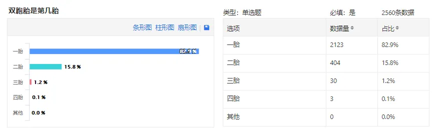
这也是我一直没狠下心生二胎的理由之一。
如果内心不是很享受这种养育的过程，真心不建议生太多孩子。
须知道，女人最大的自律就是不乱生孩子。
坚守自己的底线吧，把自己活明白了再考虑要不要生多几个娃。
双胞胎的受孕情况？
对于自然受孕，我的理解是这样的：
你和队友身强力壮，脏器功能正常，无需药物或器械的助力就能造人成功，祖上没有双胞胎，你的圈子，哪怕辐射到十万八千里也见不着双胞胎，甚至连你自己都觉得中彩票比生双胞胎还容易些，但是恰恰就是有那么一天，你怀孕了，去做B超，医生突然来一句：恭喜您，双蛋黄！
不要相信婆婆对你的PUA，说什么托了祖上的光，我儿子厉害....巴拉巴拉...
姐们，你要勇敢怼回去：祖上不管这个，跟小威也没关系，这是大自然的选择，随机的。
摊上了，就接受吧！
双胞胎的绒毛膜性
敲黑板，双胞胎的绒毛膜性的意义和重要性，相当非同小可。
关系到，孕妈妈什么时候生，剖还是顺，产检是隔1个星期还是2个星期，有些产检项目是否要加做。要是遇到并发症，还得看绒毛膜性再综合考虑怎么治。
所以，刚怀上双胞胎的新手妈妈一定要搞清楚自己的绒毛膜性：是单绒还是双绒？是单羊还是双羊？
尽量在12周之前确定好，以免后面胎儿增大，难以分辨，自己蒙圈，医生也头大。
欲知详情，可以参考这篇
《官宣：双绒双羊，单绒双羊，单绒单羊傻傻分不清？一篇消除你所有疑问》
《我是双绒双羊，居然是同卵双胞胎…》
双胞胎的出生孕周
看到36-37周生的占多数这个数据，我认为还是比较准确的。
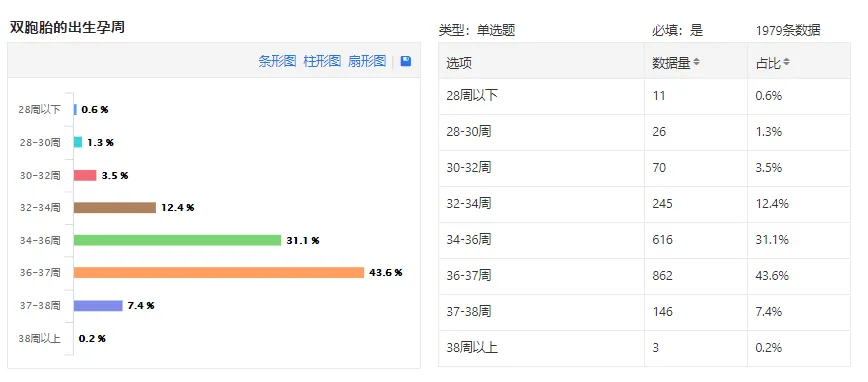
还记得产检时，B超医生说，放宽心，熬到36周就很棒了。
遗憾的是，我距离36周还差2天，主治医生看我见红了，都懒得打硫酸镁，直接把我拖去手术室剖了！
理由是，意义不大了，都熟透了，再不出来娘仨随时都会芭比Q。
我时常在社群遇到熬孕周的宝妈，她们很有信心，坚定执着地要熬到37周，38周，甚至更久...
我真佩服她们的勇气，但也替她们捏把汗，孕后期变数大，随便一个并发症都有可能危及生命，没意义的熬孕周使不得，真的需要听听专业医生的建议，不要太蜜汁自信了。
《线上活动|你家的双胞胎几周出生》
双胞胎的分娩方式
双胞胎育儿界口口相传的一句话：十个里面有一个是顺的。
可见，顺产双胞胎，不是没有，但是少见。
在此给5.9%的孕妈妈，13800138000个赞。这得有多么强大的内心和坚决才能做到啊！
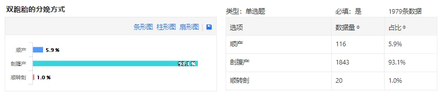
一般双胎妊娠的孕妇，绝大多数医院都会建议剖宫产，因为这样更安全些。然而，这5.9%的妈妈们竟然可以坚守心理防线，突破层层困难，顺利生下两个娃。
我敢说，这个牛逼可以吹爆一辈子！
像我这样的怂包，真的学不来，33周就躺平在医院，死皮赖脸地占个床位，等到要发动了，就果断剖了，连挣扎一下都没有。
我从B超查出怀的是双胞胎那一刻开始，我就决定要剖腹产，生的时候两孩子的胎位很好，都是双头位，自身条件也不错，关键是我还没感觉到疼痛就已经默默地开了2指，医生也鼓励我试一下顺产，还给我打包票说，第一个孩子一定可以顺下来，可是我还是果断拒绝了。
一路胆战心惊，过关斩将地闯过来了，真的太累了，到最后关头，不想去冒这个险了，只想速战速决，一剖了之。
双胞胎的性别
有段时间，孕期群都是扎推生双子的报喜，我明显感觉到，群内的气氛顿时凝固了不少。
爸爸群也很诡异，一听到生的是两男孩，整个群哀嚎一片：怎么又是两个带把的！？
身为群主，我能说点什么吗？
我好像也无力吐槽了，因为我们家也是两个双胞胎男孩，非常清楚那杀伤力，破坏力和战斗指数...仿佛在那么一刹那间就看到了头，没有了活下去的勇气。
别跟我说，生男生女都一样。
我告诉你，真的不一样！
等我有空又有口气在，再跟你们吐槽吧，此处先省略...
双胞胎出生体重和出生状况
我把这两组数据放一起了，是想说，
传说中的体重不足5斤就要进保温箱，只是个体，体重不是唯一标准，还得看各方面的评估。
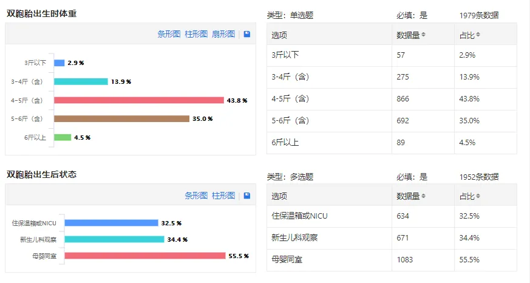
圆圈兄弟在35周+5天出生就有5斤多，我一直引以为傲。
可是后来跟一位妇产科的朋友聊起，才发现其实我不应该在后期一味地追体重，就不加节制地胡吃海喝，大概率是把娃都吃撑出来了。
如果孕后期能注意食量，可能还能熬多一两天，胎儿在肚子里多待一天，就相当于在外面呆7天，心肺功能发育得更完善些，适应外界的能力才更强。
然而，圆圈兄弟出生距离36周就只差那两天，虽然体重不错，出生评分也很好，但是观察期间还是出现很多小问题：卵圆孔未闭合，吸入性肺炎，呼吸暂停，发绀，小肠吸收不好，照了磁共振还发现脑部有暗影，连卡介苗都推迟了一周才能接种...
医生说这跟早产有关，是发育问题，没办法的，只能在新生儿科养一段时间，再观察看看。
我时常很自责地想，要是熬多两天，他们会不会更强壮点，而不是像现在这样：吃啥都长不高长不壮，怎么看就是先天不足，注定弱鸡。
双胞胎有几个人带
这数据只能代表某个阶段，但绝不是双胞胎刚出生的头几个月。
圆圈兄弟刚出生的前三个月，公婆和小姑子三人主力，我和圆圈爸打下手，合计5个人带，都累得人仰马翻，口吐仙气。
后面慢慢的适应和不断的磨合，妥协，退让...只有公婆两人白天带，我和圆圈爸晚上接力。
再随着圆圈兄弟的成长，很多事情就不用亲力亲为，1人带俩娃已经绰绰有余了。
港真，经过养娃大军的多次变迁和数次调整，我认为，两个人带双胞胎是最佳组合，虽然最累，但是最享受，最乐在其中。
带双胞胎的人手不是越多越好，有一个给力，默契和全方位支持你，相信你的队友就可以秒杀整团人。
《双胞胎要几个人带？卧底12个妈妈群得出了答案》
双胞胎分开抚养吗
双胞胎分开抚养的问题，我们之前讨论过，可以看往期文章。
《为什么我的双胞胎不分开养》
心疼被迫分开的4.2%双胞胎，希望孩子们早日回到彼此身边，一起成长。
双胞胎的口粮问题
不要被纯母乳道德绑架了。
不能喂母乳就不是好妈妈，是最大的谎言。
我没有给圆圈兄弟喂过母乳，起初看他们老生病就很自责，总觉得是自己的问题，但是后面想通了，更加让我坚定了信心，要用余生和有限的精力去陪伴他们成长。
爱的表达不是只有37°的母乳，还有360°全方位的陪伴。
喂不喂母乳，是你的自由，跟爱不爱孩子，没有半毛钱关系。
双胞胎如何睡觉
虽然专家都提倡新生婴儿自己睡小床，然而大多数的双胞胎家庭都是一个大人各自带一个孩子睡大床，或者是2大2小一起挤一张大床。
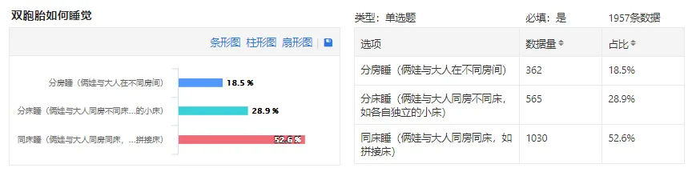
我想，这52.6%的人，只有一个理由，那就是感觉这样更方便照顾。
比如喂夜奶，妈妈可以把身体挪动到宝宝的身边，或者把宝宝移动到自己身边，喂夜奶后，直接躺下睡觉，不需要再起床。对妈妈来说，有助于保证自己的睡眠时间。
双胞胎如何睡觉，每个家庭的选择有所不同，真不需要听专家怎么说，别人怎么做。
自己觉得舒服安全就行。
最后....考你一道小学语文题！
【孖仔帮】的“孖”怎么读？知道吗？
敲下黑板，我们一起读，孖，ma，第一声，与【妈】字同音。
再也不想看见你们在群里弱弱地问：那个【孖】字到底怎么读啊！？
-END-
今日互动话题
#你还知道哪些双胞胎的小秘密#
评论区聊一聊呗！
微信公众号：孖仔帮
ID : twinsbang
专注双胞胎孕育，养育，教育经验分享
扫码关注我们
点一下你会更好看耶

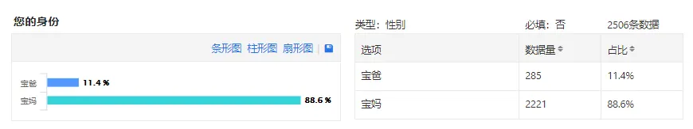
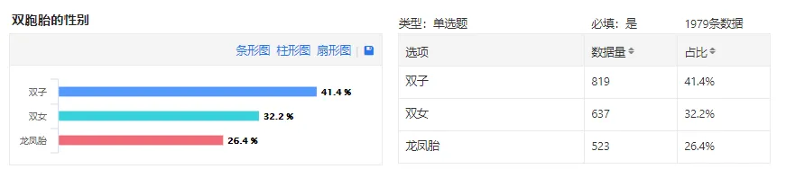
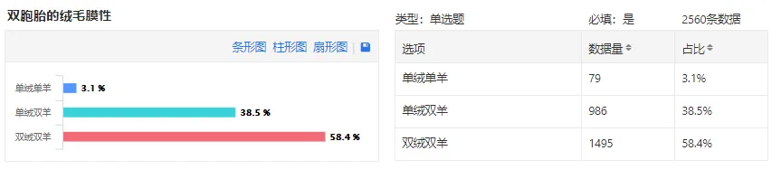
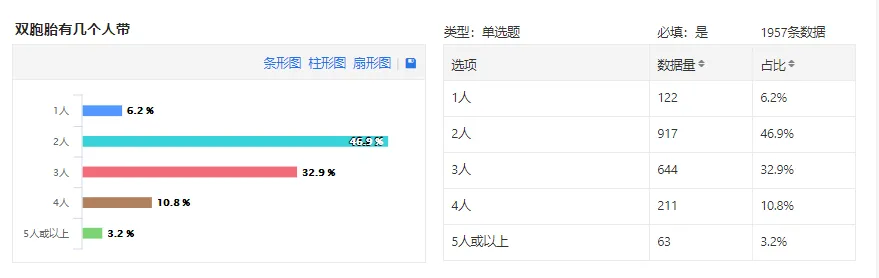
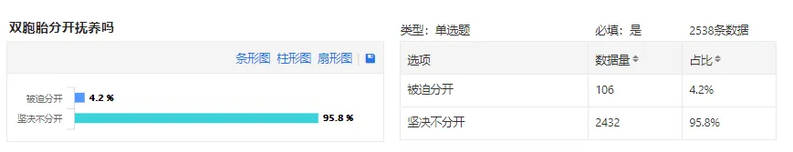
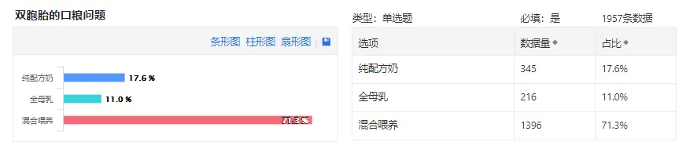
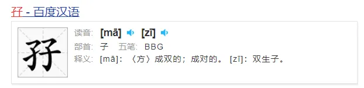